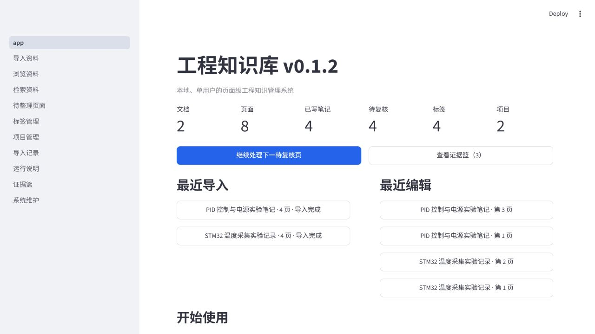
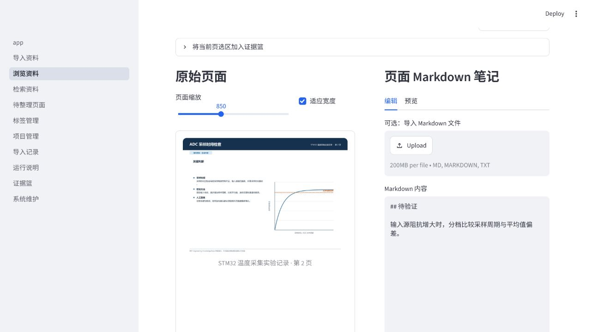
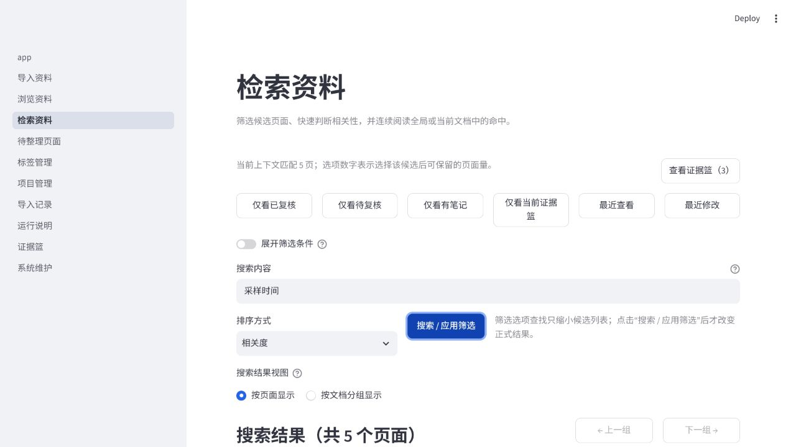
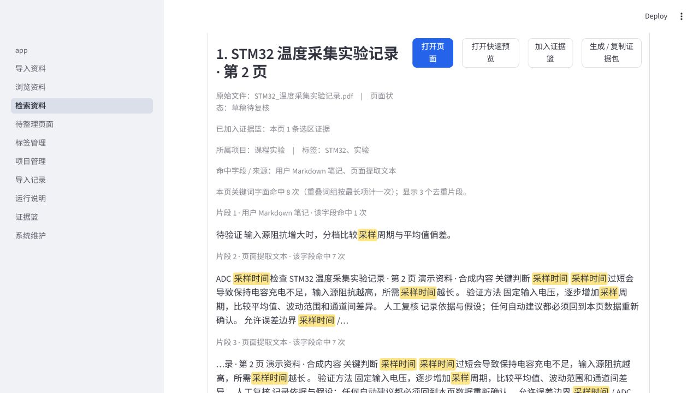
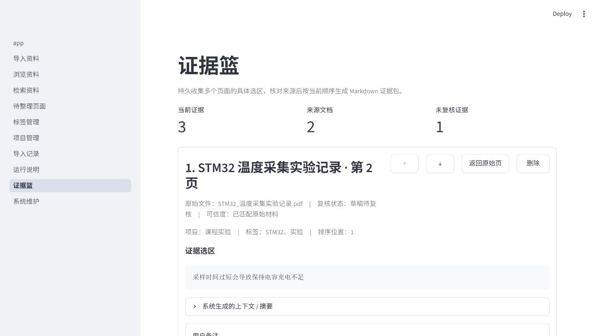
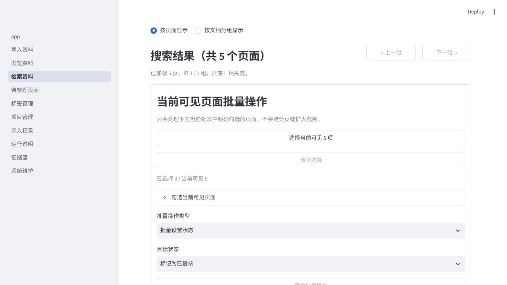
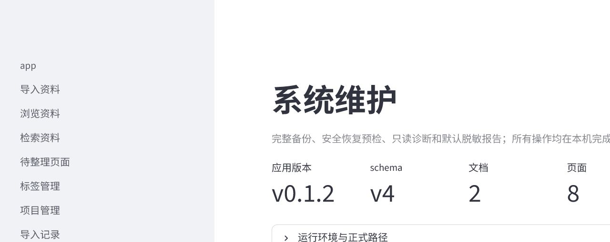

资料分散
PDF、课程笔记、实验记录和代码资料彼此分离，整理成本不断累积。
Local-first engineering knowledge
面向工科学生的本地工程资料管理工具
将分散的 PDF、课程笔记和实验资料整理为可检索、可复核、可摘录、可长期积累的个人工程知识库。
公开项目展示仓库。当前公开项目介绍与界面演示，完整源码和可安装版本尚未公开。

Current status
Why
工程资料并不缺，真正缺少的是能在几周后仍然回到原始页面、复核判断并继续使用的工作流。
PDF、课程笔记、实验记录和代码资料彼此分离，整理成本不断累积。
普通搜索缺少页面级上下文，很难快速确认命中位置和原始来源。
阅读、复核、摘录、备注和后续归类常在不同工具中完成，线索容易丢失。
同一知识点会在课程、实验和项目中反复出现；一次性问答不能替代可追溯的个人知识资产。
“我需要的不是一次性总结，而是一套能把资料位置、页面依据和自己的理解长期留下来的工作流。”
Workflow
围绕页面保存状态、笔记、证据选区和来源位置，让检索结果能够回到具体文档与页码。
What works now
功能取舍围绕“导入—复核—检索—摘录—整理—恢复”的日常闭环。
SHA-256 去重、原文件保留、逐页渲染和已有文本层提取。
以页面为单位查看原图、编辑 Markdown 并记录人工复核状态。
多关键词、组合筛选、排序、命中字段和关键词高亮。
整页、文字选区与图片区域统一保存，并按类型校验来源锚点。
批量处理当前可见页面的状态、标签和项目，写入前预检并确认。
提供完整备份、恢复预检和默认只读的系统诊断。
引用整个页面，保留文档、页码与来源定位。
保存选区内容，并按来源文本哈希识别原文变化。
以原始 PNG 哈希、尺寸和坐标锚定图片局部。
用户可显式确认或取消确认每条证据。
页面、文字选区与图片区域结构化笔记可显式加入。
最终统一 Release Check、1020 项完整 pytest、Ruff 与真人 Smoke Test 全部通过。
数据库升级为 schema v7，既有证据完整保留并迁移为未确认的文字选区证据。详见 v0.4.0 公开发布摘要。
v0.4.3 完成 RPV-01～11 和 H1～H7；RPV-12 延后至 v0.5.0，OBS-E 保持为 MEDIUM 技术债。详见 v0.4.3 公开发布摘要。
Interface
以下截图展示的是核心 UI 工作流，均来自 v0.1.2 界面，使用与正式环境隔离的合成演示资料，不包含真实课程材料或个人数据。v0.4.0 的证据对象、来源模型与新侧边栏以发布摘要为准；这些截图不是 v0.4.0 新截图。

在同一上下文中查看页面原图、编辑 Markdown 笔记并维护复核状态。

使用多关键词、快捷筛选、组合条件和排序定位候选页面。

回到具体文档、页码和命中片段，快速确认上下文。

把具体选区、个人备注、页面状态和来源位置一起保存。

批量操作只作用于用户明确选中的当前可见页面。

提供本地备份、恢复预检与只读诊断入口。
Progress
Next steps
继续改善工程资料的人工组织和页面级工作流。
继续改善手写内容的人工整理与知识关系组织。
诊断摘要展示、文档状态刷新与恢复能力属于后续事项。
AI 不是 v0.4.3 已实现功能，仍作为后期可选增强评估。
Long-term direction
以上为长期规划，不是当前已实现功能。
AI 只作为可选增强。原始资料和人工确认始终掌握最终可信度，AI 服务不可用时也不影响核心知识管理功能。
Public scope